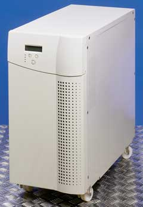

Вряд ли кто-нибудь станет оспаривать тезис о том, что сегодня небольшие и средние компании - представители SMB-сектора, точно так же, как и гиганты индустрии, весьма чувствительны к качеству энергоснабжения. Известно, что непрерывность и своевременность исполнения основных бизнес-процессов - непреложное требование для успешной коммерции, вне зависимости от размеров компании, однако, в отличие от крупных корпораций, для мелких фирм сбои и остановки бизнеса подчас могут привести к его полному краху. Сегодня, когда инфраструктура, обеспечивающая функционирование бизнес-процессов, целиком и полностью завязана на ИТ, вопросы энергоснабжения столь же жизненны для малого бизнеса, как, к примеру, ведение своевременной и корректной бухгалтерской отчетности.
В данной статье мы рассматриваем представленные сегодня на российском рынке решения, подходящие, с нашей точки зрения, для защиты энергоснабжения критически важных бизнес-процессов в небольших компаниях. Поскольку речь идет именно о критически важных процессах, мы остановили свой выбор на ИБП, использующих технологию двойного преобразования электроэнергии для питания нагрузки - так называемых on-line ИБП, которые обеспечивают максимальное качество энергоснабжения и самый высокий уровень готовности подключенного серверного оборудования. Принимая во внимание типовую схему организации ИТ-инфраструктуры в SMB-компаниях, для рассмотрения были выбраны модели напольного исполнения, мощностью в пределах 750-1500 В.А, способные обеспечить защиту одного выделенного сервера в конструктиве типа "башня".
Мы обсуждаем здесь продукцию ведущих мировых производителей ИБП, присутствующую на российском рынке, без учета рыночной доли компаний, объемов продаж и прочих рыночных показателей. Компании представлены в обзоре в алфавитном порядке.
Устройства APC
Компания АРС (http://www.apc.ru) представлена в обзоре устройствами из серии Smart-UPS RT, относящимися к обширному семейству Smart-UPS. Заказчикам на выбор предлагается целая гамма ИБП мощностью от 1000 В.А до 10 кВ.А, что несколько перекрывает заданные нами требования. Впрочем, в этом есть и свои плюсы - покупатели Smart-UPS RT без проблем смогут масштабировать уже установленные у них ИБП по мере роста своего бизнеса. Ниже мы рассматриваем самую младшую модель этой серии ИБП - мощностью 1000 В.А.
| ИБП серии APC Smart-UPS RT.
|
Входной разъем Smart-UPS RT соответствует стандарту IEC 320 и оборудован розеткой типа C14. Автоматический обходной переключатель (байпас) штатно встроен в эту модель. Номинальное входное напряжение серии RT может задаваться заказчиком в зависимости от параметров его электросети; возможные значения: 220, 230 или 240 В. При этом диапазон возможных значений входного напряжения при работе от сети может варьироваться в пределах от 160 до 280 В. Частота тока на входе определяется ИБП автоматически в соответствии со стандартом питающей сети - 50 или 60 Гц; допустимы отклонения в пределах ± 5 Гц. Постоянно действующий многополюсный шумовой фильтр с амплитудой остаточного напряжения 0,3% по нормативам IEEE фильтрует шумы входного тока и ограничивает всплески напряжения без задержки по времени. Согласно спецификациям, ИБП Smart-UPS RT способен поглощать энергетические всплески мощностью до 420 Дж.
Шесть выходных разъемов Smart-UPS RT соответствуют стандарту IEC 320 и оборудованы розетками типа C13. На выходе ИБП дает чистый синусоидальный сигнал с номинальным напряжением 230 В и с искажениями формы, не превышающими порога в 3%. Выходная, синхронизированная с электросетью, рабочая частота составляет 50 или 60 Гц, ее возможные колебания не превышают ± 3 Гц. Пользователи также могут вручную корректировать рабочую частоту с шагом 0,1 Гц. КПД Smart-UPS RT при работе с полной нагрузкой составляет 88%. Пик-фактор серии Smart-UPS RT равен 3:1.
ИБП оснащен необслуживаемой герметичной свинцово-кислотной батареей с загущенным для защиты от утечек электролитом. Типовое время ее перезарядки - около 3 ч. Для модели Smart-UPS RT мощностью 1000 В.А максимальная продолжительность работы от батареи в режиме половинной нагрузки составляет 24,4 мин, а при полной нагрузке - 10,2 мин. Семейство Smart-UPS RT позволяет подключать неограниченное число батарейных комплектов соответствующего типа, с тем чтобы поддерживать повышенные требования к продолжительности работы от аккумуляторов, предъявляемые ответственными системами высокой готовности.
Для реализации функций дистанционного мониторинга и администрирования Smart-UPS RT оснащен интерфейсом RS-232 с разъемом типа DB9. Кроме того, в корпусе ИБП предусмотрено специальное гнездо для установки опциональных плат расширения, совместимых со стандартом SmartSlot.
В числе других полезных особенностей Smart-UPS RT можно отметить автоматический перезапуск полезных нагрузок после выключения ИБП, автоматический встроенный тест, интеллектуальную систему управления батареями, кондиционирование питания, уведомление о прогнозируемых отказах, автоматические предохранители.
ИБП Chloride
Источники бесперебойного питания компании Chloride (http://www.chloride.ru), поставляемые в Россию группой компаний Inelt (http://www.inelt.ru), представлены в обзоре двумя моделями - из серий Active и Power LAN Plus.
Серия Chloride Active включает в себя устройства мощностью от 700 до 3000 В.А, что, как в предыдущем случае, несколько перекрывает условия рассматриваемой нами типовой задачи, поэтому далее в обзоре мы будем рассматривать модели ИБП мощностью лишь до 2000 В.А.
Входной интерфейс ИБП Chloride Active соответствует стандарту IEC 320 и оборудован розеткой типа C10. Встроенный электронный обходной переключатель работает в автоматическом режиме и существенно улучшает перегрузочные характеристики ИБП. Согласно спецификации, Chloride Active способен выдерживать перегрузки до 110% на протяжении 10 с и перегрузки до 130% на протяжении 1,5 с.
Номинальное входное напряжение серии ИБП задается пользователем в зависимости от параметров его электросети как одно из следующих значений: 220, 230 или 240 В. Диапазон возможных значений входного напряжения при работе от сети может изменяться в промежутке от 160 до 276 В. Частота тока на входе устанавливается автоматически в соответствии со стандартом питающей сети и равна 50 или 60 Гц при допустимых отклонениях в границах ± 5%. Коэффициент использования мощности на входе ИБП составляет 0,95.
Квартет выходных разъемов Chloride Active соответствует стандарту IEC 320 и оборудован розетками типа C10. На выходе ИБП выдает синусоидальный сигнал с искажениями порядка 4% (и менее) при подключении линейной нагрузки и меньше 8% при подключении нелинейной нагрузки. Номинальное выходное напряжение определяется пользователем из ряда значений 220, 230 или 240 В, при этом возможные колебания не превышают ± 3%. Выходная рабочая частота ИБП - 50 или 60 Гц, ее колебания не выходят за границы коридора ± 0,5%. Коэффициент использования мощности на выходе ИБП составляет 0,7. Пик-фактор серии Chloride Active равен 3:1.
ИБП оснащен герметичной свинцово-кислотной батареей, не требующей обслуживания. Для увеличения времени автономной работы семейство Active позволяет подключать внешние батарейные кабинеты (шкафы), выполненные в том же дизайне, что и основной модуль.
Модели серии Active оснащены интерфейсом RS-232 с разъемом типа DB9, а также интерфейсом USB с разъемом Type B, что обеспечивает удаленное администрирование и конфигурирование ИБП. Кроме того, устройства имеют внутренний слот для подключения сетевого адаптера ManageUPSNet и/или карты с "сухими" контактами.
В числе других полезных особенностей Chloride Active отметим возможность интеграции ИБП с автоматом выбора линий Cross Rack, что обеспечивает полное системное резервирование электропитания на уровне исключительной надежности, и функцию "холодного" старта, которая позволяет применять ИБП в ситуациях длительного отключения электроэнергии.
В серию Chloride Power LAN Plus входят устройства мощностью от 750 до 3000 В.А. На превышении установленного нами порога мощности мы, как и прежде, не будем заострять внимания, отметим лишь, что здесь рассматриваются устройства с мощностью до 1500 В.А.
ИБП серии Power LAN Plus имеет входной интерфейс, соответствующий стандарту IEC 320 с розеткой типа C10. Встроенный статический обходной переключатель отличается чрезвычайно малым временем переключения. Согласно спецификации, ИБП Chloride Power LAN Plus способны выдерживать перегрузки до 110% на протяжении 1 мин, до 160% на протяжении 30 с и перегрузки до 200% в течение 2 с.
Номинальное входное напряжение ИБП выбирается пользователем в зависимости от параметров его электросети из следующих значений: 220, 230 или 240 В. Допустимы отклонения в пределах ± 10-15%. Частота тока на входе равна 50 Гц при допустимых отклонениях ± 4%.
На выходе Chloride Power LAN Plus имеется четыре разъема, соответствующих стандарту IEC 320 и оборудованных розетками типа C10. Инвертор выходного напряжения серии Power LAN Plus построен с использованием технологии широтно-импульсной модуляции. Он выдает псевдосинусоидальный сигнал с искажениями около 3% при подключении линейной нагрузки и менее 5% для нелинейной нагрузки. Номинальное выходное напряжение определяется пользователем из ряда значений 220, 230 или 240 В с границами отклонения ± 5%. Выходная рабочая частота ИБП - 50 Гц при допустимых колебаниях ± 4%. Коэффициент использования мощности на выходе ИБП составляет 0,7. Пик-фактор серии Chloride Power LAN Plus равен 3:1.
ИБП оснащен герметичной свинцово-кислотной батареей, не требующей обслуживания.
Для дистанционной настройки и управления модели серии Power LAN Plus оснащены интерфейсом RS-232 с двумя разъемами типа DB15. Помимо этого, в корпусе имеется слот для установки опциональных SNMP-контроллеров ManageUPSnet. В комплект поставки входит ПО MopUPS Professional для управления и мониторинга ИБП, которое позволяет нормально завершить работу приложений и ОС защищаемых устройств в случае длительного пропадания электропитания или плановых административных отключений в сетях LAN/WAN.
Отличительная особенность устройств серии Chloride Power LAN Plus - возможность интеграции с сервисом удаленного контроля LIFE2000 для гарантированного обслуживания ИБП высококвалифицированными специалистами 24 часа в сутки, 7 дней в неделю, 365 дней в году.
Модели Liebert HIROSS
Из ИБП Liebert HIROSS (http://www.liebert.com) в обзоре рассматривается серия Liebert HIROSS UPStation GXT2, включающая устройства мощностью от 500 до 6000 В.А. Как и прежде, исходя из поставленных условий, мы ограничились устройствами мощностью до 1500 В.А.
На входе UPStation GXT2 имеет интерфейс, соответствующий стандарту IEC 320 и оборудованный розеткой типа C14. В ИБП встроен автоматический обходной переключатель, который значительно улучшает перегрузочные характеристики ИБП. Согласно спецификации, устройства UPStation GXT2 способны выдерживать перегрузки до 130% на протяжении 10 с и до 200% длительностью не более восьми циклов.
Номинальное входное напряжение устройств этой серии определяется заказчиком по собственному усмотрению в зависимости от параметров электросети как одно из следующих значений: 220, 230 или 240 В. Диапазон возможных значений входного напряжения при работе от сети может изменяться в промежутке от 119 до 280 В. Частота тока на входе устанавливается автоматически в соответствии со стандартом местной энергосети и может принимать любые значения в диапазоне от 40 до 70 Гц при стандартных номинальных значениях 50 или 60 Гц.
Шесть выходных разъемов UPStation GXT2 соответствуют стандарту IEC 320 и оборудованы розетками типа C13. Номинальное выходное напряжение выбирается пользователем из ряда значений 220, 230 или 240 В. Выходная рабочая частота ИБП - 50 или 60 Гц, при этом она может варьироваться в диапазоне 40-70 Гц.
ИБП оснащен герметичной свинцово-кислотной батареей, не требующей обслуживания. Для увеличения времени автономной работы семейства UPStation GXT2 можно подключать к головному устройству внешние батарейные шкафы, в результате чего длительность такой работы можно довести до 272 ч в случае полной нагрузки и до 704 ч при половинной нагрузке (в зависимости от мощности используемого ИБП).
Модели серии UPStation GXT2 оснащены интерфейсами RS-232 и USB, предназначенными для подключения консоли удаленного администрирования и конфигурирования ИБП.
Устройства MGE UPS Systems
Компания MGE UPS Systems (http://www.mgeups.com) представлена в обзоре серией MGE UPS Pulsar EXtreme C, в рамках которой предлагаются устройства мощностью от 700 до 3200 В.А. Согласно первоначальным условиям, мы остановимся на ИБП мощностью до 1500 В.А.
| ИБП серии MGE UPS Pulsar EXtreme C.
|
Входной интерфейс MGE UPS Pulsar EXtreme C соответствует стандарту IEC 320 и оборудован розеткой типа C14. В системе присутствует встроенный автоматический обходной переключатель, значительно улучшающий перегрузочную способность ИБП. Согласно спецификациям, устройства Pulsar EXtreme C могут выдерживать перегрузки до 110% в непрерывном режиме, до 130% на протяжении 12 с, а более 130% - на протяжении 1,5 с. Номинальное входное напряжение серии ИБП определяется пользователем в зависимости от параметров электросети из следующего набора значений: 120 либо 140 В при нагрузке 33 или 66% соответственно или любое значение из диапазона 160-276 В при нагрузке 100%. Частота тока на входе устанавливается автоматически в соответствии со стандартом питающей сети и равняется 50 или 60 Гц при допустимых отклонениях в пределах 40-70 Гц.
Шесть выходных разъемов UPS Pulsar EXtreme C соответствуют стандарту IEC 320 и оборудованы розетками типа C13. Номинальное выходное напряжение источника бесперебойного питания составляет 230 В, при этом у пользователей есть возможность выбора реального напряжения в соответствии с их потребностями из следующего перечня: 200, 208, 220, 230 и 240 В. Выходная рабочая частота устройств составляет 50 или 60 Гц в зависимости от настроек, при этом ее колебания не выходят за границы коридора ± 0,5%.
В комплект поставки ИБП входит герметичный свинцово-кислотный аккумулятор, не требующий обслуживания. В стандартной комплектации при нагрузке 50% он обеспечивает до 18 мин работы в зависимости от класса ИБП. При нагрузке 70% время непрерывной работы составляет 11 мин.
Устройства серии MGE UPS Pulsar EXtreme C оснащены интерфейсами RS-232 и USB, посредством которых возможно администрирование и конфигурирование ИБП на расстоянии. Кроме того, устройства имеют внутренний слот для подключения опциональных плат SNMP/Web-мониторинга. В комплект поставки входит ПО Solution Pac, позволяющее проводить контроль защищаемых серверов (корректное закрытие приложений), а также локальный и дистанционный мониторинг ИБП.
ИБП Powerware
Из продукции компании Eaton (http://www.powerware.ru) в обзоре рассматривается младшая модель обширной линейки "Серия 9" - ИБП Powerware 9120 UPS мощностью от 700 до 6000 В.А. И снова мы ограничиваем спектр рассматриваемых устройств мощностью 1500 ВА.
|  | ИБП Powerware 9120 UPS.
|
Устройства Powerware 9120 UPS имеют оборудованный разъемом стандарта IEC-320 10А вход и оснащены механическим автоматическим обходным переключателем со скоростью срабатывания менее 4 мс. Номинальное входное напряжение может равняться 220, 230 или 240 В. При работе от сети допустимы также значения 120 и 140 В при нагрузке 33 и 66% соответственно и любые значения из диапазона 160-276 В при нагрузке 100%. Номинальная частота тока равна 50 или 60 Гц, а допустимый рабочий диапазон 45-65 Гц. Согласно спецификации, Powerware 9120 при питании от сети способен выдерживать перегрузки до 125% на протяжении 1 мин и до 150% на протяжении 10 с. При питании от батарей перегрузки могут достигать 130% и длиться при этом не более 10 с, перегрузки выше 130% не выдерживаются дольше 1,5 с. Коэффициент использования мощности на входе ИБП Powerware 9120 составляет 0,97.
Четыре выходных разъема Powerware 9120 выполнены в соответствии со стандартом IEC 320 и оборудованы розетками типа 10А. На выход ИБП выдает синусоидальный сигнал с искажениями менее 3% при подключении линейной нагрузки и менее 5% при подключении нелинейной нагрузки. Номинальное выходное напряжение устанавливается из следующих возможных значений: 208, 220, 230 или 240 В. Стабильность напряжения гарантирована в пределах ± 2%. Выходная рабочая частота ИБП равна 50 или 60 Гц, ее колебания не выходят за границы коридора ± 0,25%. Коэффициент использования мощности на выходе ИБП составляет 0,7; КПД Powerware 9120 - 0,86.
ИБП семейства Powerware 9120 оснащены герметичным свинцово-кислотным аккумулятором, не требующим обслуживания. Время зарядки батарей до уровня 90% составляет примерно 5 ч. Время резервного питания при полной нагрузке - 8 мин. Для увеличения времени автономной работы ИБП семейство Powerware 9120 позволяет подключать внешние батарейные шкафы, обеспечивающие до 30 мин резервного питания при полной нагрузке.
Модели серии Powerware 9120 оснащены интерфейсами RS-232 и USB, что позволяет настраивать и контролировать работу ИБП дистанционно. Кроме того, устройства имеют внутренний разъем DB-Slot, предназначенный для установки опциональных карт расширения.
В числе особых отличительных черт Powerware 9120 можно отметить тот факт, что эти ИБП обеспечивают защиту оборудования от всех девяти возможных проблем с электропитанием: пропадания напряжения, провалов, всплесков, пониженного напряжения, повышенного напряжения, коммутационных помех, высокочастотных помех, отклонения частоты, нелинейных искажений формы напряжения.